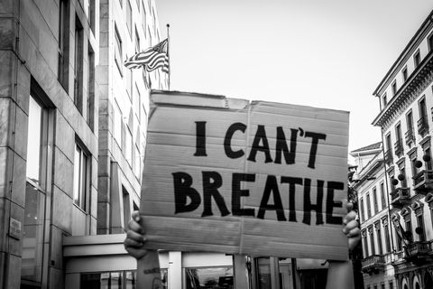

Dear Friends Around The Table,
We as a community will not be silent on the topic of racism in the USA, or globally.
- We are unequivocally anti-racism
- We condemn the oppressive system of White privilege, power, fragility and oppression that is literally snuffing the breath out of our Black neighbors
- We say clearly and without nuance that Black Lives Matter
- We wholeheartedly affirm the inherent and equal dignity, worth and value of every human being; and stand in grief, rage and hope of change with our Black neighbors, Native American neighbors, Latinix neighbors and all People of Color in our direct circle of influence and beyond.
- We accept our responsibility to work for the justice and peace we long for among humans in our world, in our country, in our state and in our city.
- We value the restoration that comes from joining God’s family, as we turn away from independence and toward interdependence. We recognize that restoration is desperately needed on our earth today in all of our broken relationships with humans, creation, money, sexuality, power. We will work for justice and peace to reign on earth through our gospel-obedience to the holy Scriptures, so that reconciliation between God and creation will be realized.
Human Breath is Sacred; We Need Courage.
We affirm around The Table the sacredness of breath, all human breath, and the power of our breath to connect us to God's good love. The creation narratives remind us that the breath of God, God's imprint, Love's "aliveness" is in each of us. We have witnessed the unjust death of George Floyd, in which his breath was squeezed and suffocated from his body. And his death is not an isolated incident. The rate at which Black Americans are killed by police is more than twice as high as the rate for White Americans. By itself, George Floyd's tragic death is heart wrenching. In the context of a wider, national, systemic level we recognize prejudice, inequality, and the oppression of Black American lives. This spring alone, innocent Black people, Breonna Taylor and Ahmaud Arbery were killed at the hands of police of vigilante citizens taking on police-like-power into their own hands. We cannot affirm the sacredness of all human breath until we have sought space where all human breath: read here Black, Native American, Latinix, Asian American, POC and beyond, are equally valuable. We will work toward equality together.May we find the courage to connect to Love's Breath so we can utilize our own precious breath to claim justice for all.
"The photos of officers kneeling and marching and hugging are nice. The video of officers giving good speeches and becoming emotional are moving. BUT. Friends, we are not going to hug our way to justice. This fight is not about police being nicer. This fight is about systemic racism, injustice, accountability. The cute pictures won’t do. *Policy change. *Defunding. *Abolition *Prosecution These are examples of the deep changes that are being called for right now. This is what it looks like to fight for Black lives in this moment. If you don’t want this to happen again, we are going to need more than hugs. *PS: when you do see the 'nice' officers; don’t ask for hugs, ask for courage. Courage to change a system that hurts Black people."~ Austin Channing Brown